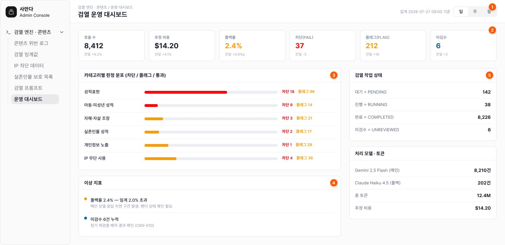

안전 ③
Moderation Console
정책을 바꿀 수 있는 값으로
남겼습니다
남겼습니다
규칙을 적어두는 것만으로는 운영되지 않습니다. 카테고리별 임계값을 운영자가 직접 조정하고, 왜 바꿨는지와 언제부터 적용되는지를 함께 남기는 콘솔을 12개 화면으로 설계했습니다.

임계값을 다루는 세 가지 규칙
소급 재계산하지 않는다
변경 이후 검열 건부터 적용. 이미 내려진 판정은 그대로 둡니다
변경 사유 메모가 필수
저장할 때 이유를 적어야 하고, 변경 이력에 함께 기록됩니다
근거를 화면에 남긴다
숫자 옆에 왜 이 값인지를 적어 다음 운영자가 판단을 잇게 합니다

운영에서 같이 보는 것
판정 품질만 보면
서비스가 남지 않습니다
서비스가 남지 않습니다
폴백률
2.4%
임계 2.0% 초과
추정 비용
$14.20
12.4M 토큰 · 일
미검수
6건
사람이 볼 큐
폴백률이 임계를 넘으면 벤더 상태를 먼저 의심해야 해서 대응이 달라집니다.
CEN-001~012 · 위반 로그 목록/상세 · 임계값 관리/변경 이력 · IP 차단 · 실존인물 보호 · 프롬프트 관리(master 전용) · 운영 대시보드 · 미검수 큐
SM 16